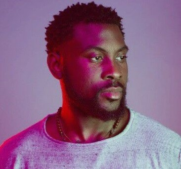

C'est une nouvelle qui a enthousiasmé avec joie ses fans. Damso, à l’occasion de la réédition de son quatrième album a déjà présenté le suivant, Bēyāh. Depuis ses débuts, Damso est particulièrement doué quand il s’agit de créer une communication cryptique et mystérieuse pour dévoiler ses futurs plans. Le point de départ du nouvel épisode a lieu en août 2023, lorsque le rappeur belge annonce au V&B festival, en Mayenne, prendre une pause dans sa carrière afin de réaliser un long road-trip en camping-car jusqu’en 2025. Actant cette longue pause, l’artiste a ensuite supprimé ses réseaux sociaux, laissant peu d’espoir pour ses fans quant à la sortie de nouveaux titres prochainement.

Damso, de son vrai nom William Kalubi Mwamba, né le 10 mai 1992 à Kinshasa (Zaïre, actuelle République démocratique du Congo), est un rappeur et auteur-compositeur-interprète belgo-congolais. Actif dans le monde du rap depuis 2006, Damso débute dans la publication de projets avec sa première mixtape Salle d'attente, sortie en 2014. Il voit sa carrière vraiment décoller en 2015, lorsqu'il est repéré par Booba. Il intègre alors le collectif et label 92i, et signe chez Universal Music France. Il est aussi connu pour son appartenance à la nouvelle vague du rap belge des années 2010 avec des artistes tels que Hamza ou Shay.
Le 28 avril 2017, Damso sort son deuxième album, Ipséité. Composé de quatorze titres, il ne contient qu'une seule collaboration, avec Youri, sur le morceau Peur d'être père. Sur cet album, Damso parle de lui, de ses problèmes, sa peur d'être père, sa difficulté à trouver sa place dans la société, de son pays d'origine la République démocratique du Congo18. L'album contient beaucoup de singles, notamment Θ. Macarena, certifié single de diamant, ou encore E.Signaler, Γ. Mosaïque solitaire, A. Nwaar is the New Black et K. Kin la belle, tous certifiés au moins single d'or. Ipséité a connu un grand buzz en partie car il a fuité sur la toile avant sa date de sortie. Le jour même de la sortie de l'album, Damso sort le clip N. J Respect R, suivi par A. Nwaar is the New Black. Un an et demi plus tard son album Ipséité est certifié disque de diamant.